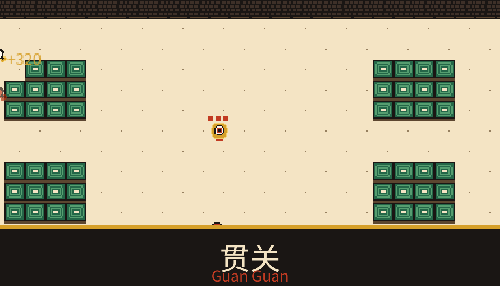

申浩贤的作品
影视动画（三维方向），长沙。这是一页作品索引：每件作品有自己的页面和一句说明。
游戏
可以在浏览器里直接玩：左右躲开落下的障碍，分数是撑住的时间。
应用
我在现成的 DeepSeek Harness 上提出并搭起来的本机多智能体工作台。
网站
API


花鼓·留根（剧本与镜单）
当代长沙花鼓短片第一集的锁定剧本、镜单和设定预演；成片生成还停着。
这一类还没有作品。
这一类还没有作品。

团队工作台 自己的作品
我在现成的 DeepSeek Harness 上提出并搭起来的本机多智能体工作台。
《错界》长篇初稿 自己的作品
都市平行世界长篇，已写出第 1–30 章，尚未完稿。本页只作介绍，不上全文。
花鼓·留根（剧本与镜单） 自己的作品
当代长沙花鼓短片第一集的锁定剧本、镜单和设定预演；成片生成还停着。
闪避 自己的作品
可以在浏览器里直接玩：左右躲开落下的障碍，分数是撑住的时间。

贾维斯定制 开源项目上的定制
底座是开源 GDDXX-Jarvis；定制部分包括本机 HTTP API、托盘，以及和团队工作台的对接。

贯关 自己的作品
一局一两分钟的俯视闯关。